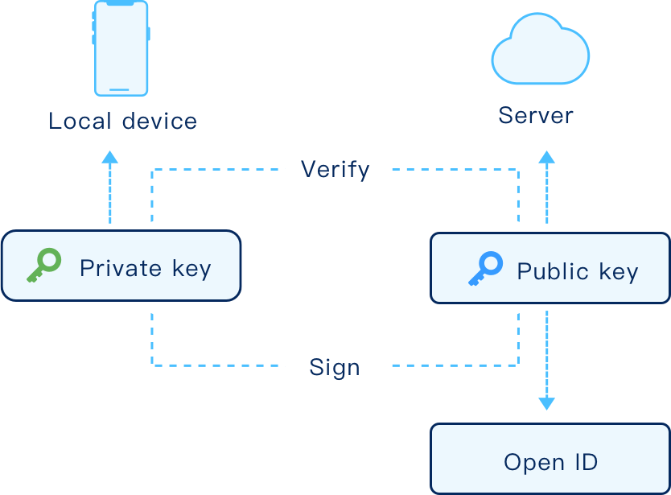
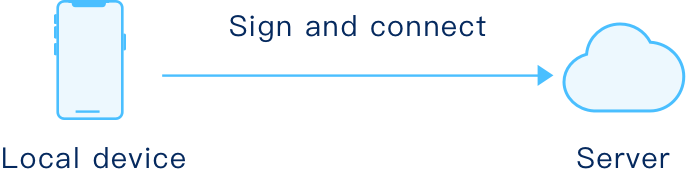
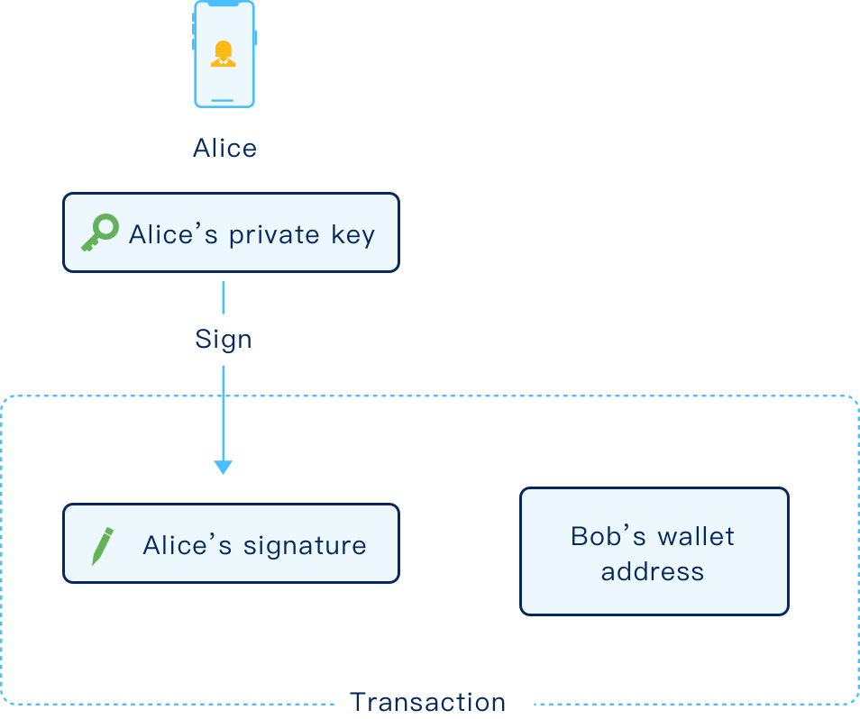
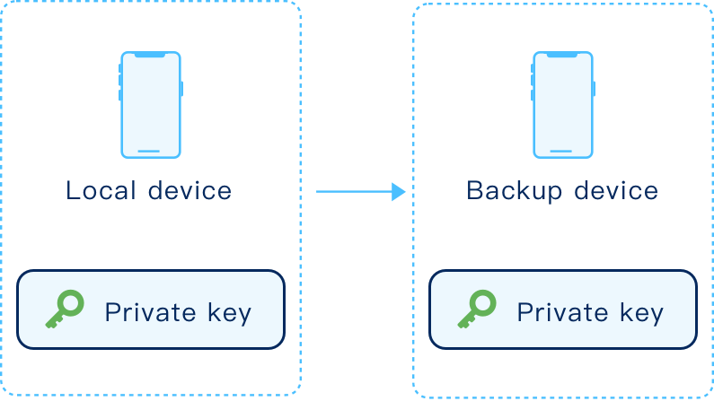

BCM Public and Private key Q&A
Q:Why do I need a public/private key pair on BCM?
A:
The public/private key pair is used for encryption and authentication. The private key
is stored only on user's local device and used to generate user’s digital signature, which
can be verified by the paired public key. The public key is uploaded and used to encrypt
data others sent, which can only be decrypted by the paired private key. The public key
is also used to create user’s identity OpenID.

Q: How is key pair used on BCM?
A:
Login: BCM uses private key stored on local device to authenticate identity. Users need
to import their private keys for authentication when they try to login to their account
through other devices.

Message: The key pair is used to negotiate a symmetric encryption key to encrypt
communication between two users while keeping their private keys and the result of the
exchange secret from all but themselves. Alice and Bob exchange their public keys and
then calculate with their own private keys and the received public key based on DH
algorithm, generating the same encryption key.

Transaction :
For Alice to transfer a coin to Bob, Alice uses her private key to sign the payment sent
to Bob’s wallet address ,authenticating the coin belongs to Alice, and ensuring only Bob
can transfer these coin with his private key.

Q : What should user do if private key was lost ?
A:
The private key is stored on local device. BCM never hold users private keys. Users
should keep their private key safe and secure. BCM will provide backup function to
export their private key to another device. Users can use the private key in backup
device for authentication .

Q : What happens to leaking private key to others?
A:
It is very important to keep the private key safe and secure, away from prying eyes, in
case anything happens to your account. Never leak your private key to others.